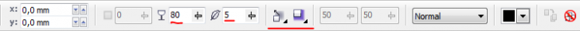

Тень с помощью контейнера
sergey / 23.06.2010, 07:41/00:41
Форум:
К сожалению в Corel у Интерактивной тени нет такого направления, что бы тень создавала эффект выреза.
Предлагаю сделать это вручную. 10 шагов. (На руках :D )
1. Набираем текст.
2. Копирем его в буфер обмена.
3. Создаём вспомогательный элемент, в моём случае прямоугольник.
4. Объединяем.
5. Создаём тень от полученного объекта.
6. Отделяем.
7. Удаляем вспомогательный объект.
8. Вставляем из буфера текст.
9. Помещаем отделённую тень в текст, как в контейнер.
10. Любуемся.
Всем удачи и творческих успехов.
Старый но очень эффективный метод!
Если тень придать окантовке (разъединить) а потом вставить в контейнер, будет эффективней, я еще битмапю и применяю размытие к тени! (и все это без вспомогательных элементов и возможностью изменять цвет)
С округленным шрифтом получается красивей!
Это настройки тени: применяются к окантовке, в объекте заливки не должно быть!

Результат с прибомбасоми :)